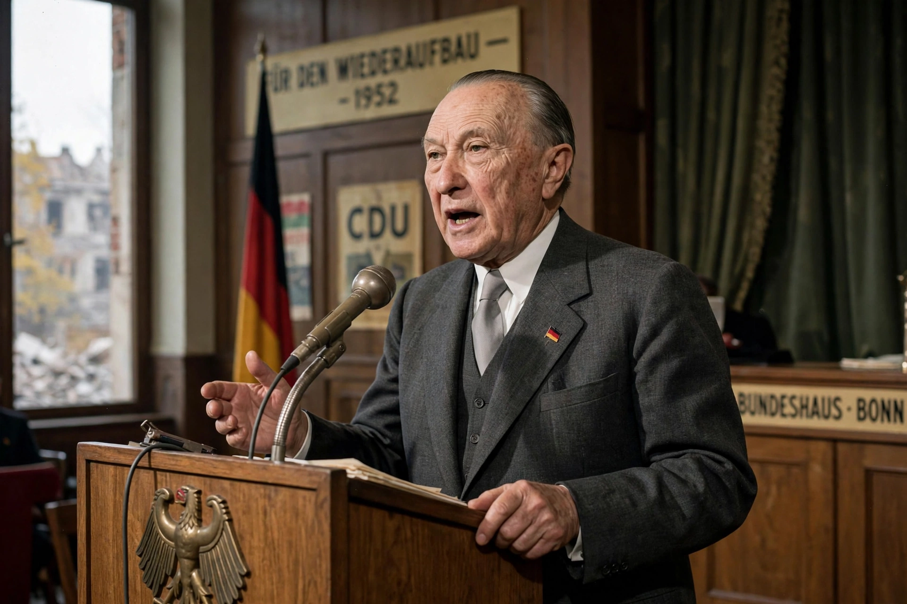

From Wikipedia, the free encyclopedia
| Christian democracy | |
|---|---|
 | |
| Key ideas | Subsidiarity, solidarity, social market economy, human dignity, communitarianism |
| Origins | 19th-century Catholic social teaching; Rerum Novarum (1891) |
| Prominent figures | Konrad Adenauer, Alcide De Gasperi, Robert Schuman, Jacques Maritain |
Christian democracy is a political ideology that emerged in 19th-century Europe under the influence of Catholic social teaching, as well as neo-Calvinism. It was conceived as a combination of modern democratic ideas and traditional Christian ethics, and it has been influential in Europe and Latin America.
Christian democratic parties typically combine socially conservative positions with support for a regulated market economy softened by a strong welfare state — most famously the German social market economy. They defend human dignity, the family, and the principle of subsidiarity: decisions should be taken at the lowest competent level of society.
The movement's intellectual roots lie in Pope Leo XIII's 1891 encyclical Rerum Novarum, which rejected both socialism and laissez-faire capitalism. After the Second World War, Christian democratic parties became dominant forces in Western Europe: the Christian Democratic Union in West Germany under Konrad Adenauer, Democrazia Cristiana in Italy under Alcide De Gasperi, and their allies were architects of European integration and the European Coal and Steel Community. In Latin America, Christian democratic parties such as Chile's Christian Democratic Party played major roles in transitions to democracy.
Christian democrats generally support a market economy with social safeguards, welfare provision, and workers' rights; they tend toward cultural conservatism on questions such as abortion and marriage, though positions vary widely by country. Internationally, Christian democratic parties cooperate through the Centrist Democrat International and, in Europe, the European People's Party.
See also: Rerum Novarum · Catholic social teaching · Social market economy · Conservatism